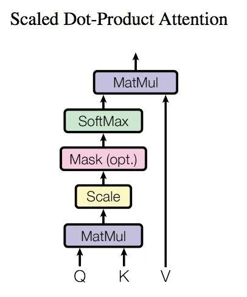
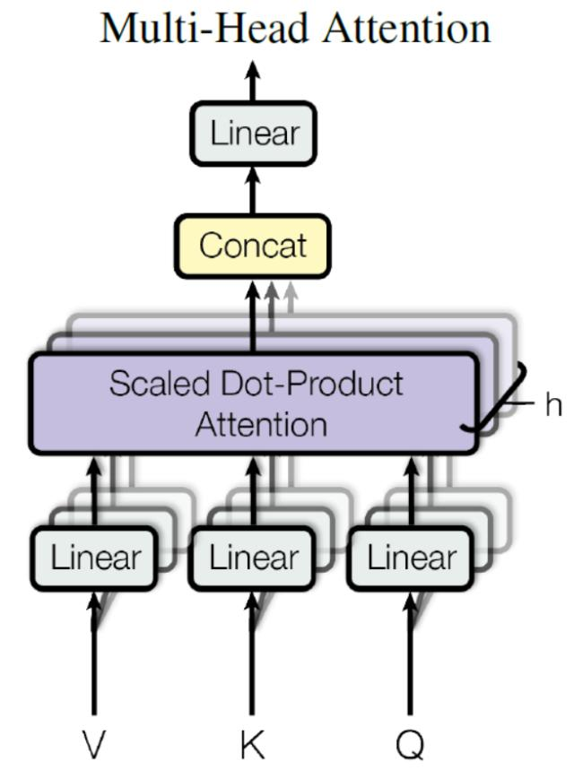

CS 231n
Systematical learning Machine Learning in CV
Resources
Some newly-learned thoughts
Training sets, validation sets & test sets
- We should isolate the test sets with the training process, "just test the final model at the very end" to avoid overfitting
- Often validation sets are extracted from training sets
Parameters in Linear Model
- We can view the Weight Matrix as a set of templates, and the scores as the similarity between the input and the templates
- So when printing the weights, we can somehow visualize the templates we learned
- Picture below is what we learned from the CIFAR-10 dataset using SVM

SVM (Support Vector Machine)
- Hinge Loss: \(L_i = \sum_{j\neq y_i} \max(0, s_j - s_{y_i} + margin)\), so-called max-margin loss because it encourages the correct class to have a score higher than the incorrect class by at least a margin
- The hinge loss is "easy to be satisfied" since it only cares about the margin, not the exact value of the score (e.g. [1,0] & [100,-100] both have the same loss when the margin is 1)
Differentiation on Vectors
- Split: Trying to do the differentiation on a smaller vector or even a single element instead of a matrix.
For example, solving Softmax - Cross Entropy Loss: \(x\) is a 1-D linear vector \(\frac{\partial{Loss}}{\partial{x}}=\frac{\partial{Loss}}{\partial{score}} \frac{\partial{score}}{\partial{x}}= -\frac{1}{score_i} \frac{\partial{score_i}}{\partial{x_i}}=-\frac{1}{score_i} score_i (score_i - (y_i == i))\)
- Dimension: Use Dimension to check or gain a overview of the result.
Process
-
Preprocessing matters a lot.
- Mean subtraction: Subtract the mean of the data, thus the data should be centered around the origin
- Normalization: Divide the data by the standard deviation, thus the data should be normalized to a similar scale
- PCA: Reduce the dimension of the data, thus the data should be more efficient to compute.For example, SVD etc.
- Feature extraction: Extract the features from the raw data, thus the data should be more informative to the model. For example, HOG, Color Histogram etc.
- Data Augmentation: Generate more data from the original data, thus the model should be more robust to the noise. For example, flip, rotate, crop etc.
-
Training
- Optimization: The gradient descent, the stochastic gradient descent, the mini-batch gradient descent, the momentum, the RMSprop, the Adam etc.
- Hyparameter Debug: The learning rate, the regularization strength, the number of hidden units, the number of layers, the number of epochs, the batch size etc.
- Monitor the Process: The loss, the accuracy, the gradient, the weights, the features etc.
- Visualize the Result: The weights, the features, the templates etc.
Assignment
Assignment 1
K-NN (K Nearest Neighbors)
- No training, just memorizing the data
- In prediction, compute the Distance with every sample (Costly)
- Use K-fold cross validation to find the best K. Concretely speaking, split the training sets into K folds, and choose each as validation set, and evaluate the model finally.
SVM (Support Vector Machine)
- Hinge Loss: \(L_i = \sum_{j\neq y_i} \max(0, s_j - s_{y_i} + margin)\)
- Regularization: \(L = \frac{1}{N} \sum_i L_i + \frac{1}{2}\lambda |W|^2\), where \(\lambda\) is the regularization strength
-
Gradient Descent:
- \(W -= \alpha \nabla_W L\),
- \(\nabla_W L_{yi} = - \Sigma_{j \neq y_i}1(w_jx_i + \Delta > 0)x_i\)
- \(\nabla_W L_i = 1(w_jx_i + \Delta > 0)x_i\)
Softmax
- Cross Entropy Loss: \(L_i = -\log(\frac{e^{score_{y_i}}}{\Sigma_j e^{score_j}})\)
- Gradient Descent: \(W -= \alpha \nabla_W L\), where \(\nabla_W L_i = -x_i(\frac{e^{score_{y_i}}}{\Sigma_j e^{score_j}} - 1)\)
2-Layer Network
- Combination of the lessons above. Not so hard to complete.
- Softmax gradient, however, seems hard to do right? But the final implement of training 2-layer network runs well and achieves the accuray of about 50%
Feature Extraction
- Color Histogram: Count the number of pixels in each color channel
- HOG (Histogram of Oriented Gradients): Count the number of gradients in each direction
- Training on raw pixel V/S on features: After extracting the features, the model can outperform the raw pixel model a lot.
Assignment 2
Fully Connected Neural Network
- Multi-layer packaged class
-
Optimization
-
SGD(Stochastic Gradient Descent):
\(W -= \alpha \ d_W\)
- Simplest way (converge slowly)
-
SGD_Momentum:
\(v = \beta v - \alpha \ d_W\)
\(W += v\)
- Simulate the physical process as ball rolling down the hill
-
RMSprop:
\(cache = \beta cache + (1-\beta) d_W^2\)
\(W -= \alpha \frac{d_W}{\sqrt{cache} + \epsilon}\) (\(\epsilon\) avoids division by zero)
- Adjust the learning rate adaptively, but the gradient may become too small
-
Adam:
\(m = \beta_1 m + (1-\beta_1) d_W\)
\(v = \beta_2 v + (1-\beta_2) d_W^2\)
\(mt = \frac{m}{1-\beta_1^t}\)
\(vt = \frac{v}{1-\beta_2^t}\)
\(W -= \alpha \frac{mt}{\sqrt{vt} + \epsilon}\)
- Combine the advantages of RMSprop and Momentum
-
Normalization
-
Batch Normalization:
- Normalize the input of each layer, thus the model should be more robust to the noise and the gradient should be more stable, - But the performance depends on the batch size a lot.
- Gradient reference
-
Layer Normalization:
- Normalize the input of each sample, thus the model should be more robust to the noise and the gradient should be more stable.
- But the performance may be influenced by the feature dimensions.
- Gradient is easy. We can transpose the matrix and transform the problem into the batch normalization.
- (N,D) -> (D,N)
-
Problem: The result of my code seems somewhat strange, like normalization works worse than without normalization. I think the problem may be the learning rate or the batch size, but I have no energy to debug it.


Dropout
- Randomly set some neurons to zero, thus the model should be more robust to the noise and the overfitting should be avoided.
mask = (np.random.rand(*x.shape) < p) / ppis the probability of keeping a neuron active, and thus the mean of the output (or mathematical expectation) should be the same as the input.
Convolutional Neural Network
-
Convolution Layer
-
Filter
- The learned template to extract the features
- Often \(3*3*C\) with stride 1
- Share parameters. Using the same filter to do convolution on the whole input, thus the model should be more efficient to compute and the number of parameters should be highly reduced.
- Too large filter may lead to a linear model, and costs more memory.
- Examples of features

-
Padding
- Add some zeros around the input, thus the output should be the same size as the input, which is convenient for the next layer to compute.
- Avoid the information loss on edges.
- \(P = \frac{F-1}{2}\), where \(F\) is the size of the filter
-
Pooling
- Max Pooling: \(max(x)\) (Popular in practice, often \(2 * 2\))
- Average Pooling: \(mean(x)\)
- Reduce the size of the input, thus the model should be more efficient to compute and the number of parameters should be highly reduced.
- Avoid the overfitting and the noise.
-
Layer Strutcture
- Input: \(N * C * H * W\)
- Filter: \(F * C * HH * WW\)
- Output: \(N * F * H' * W'\)
- Activation (often Relu): \(N * F * H' * W'\)
- Pooling: \(N * F * H'' * W''\)
-
-
Normalization
-
Spatial Batch Normalization
- Similar to Batch Normalization.
X = x.transpose(0, 2, 3, 1).reshape(-1, C)
-
Group Normalization
- Similar to Layer Normalization.
X = x.reshape(N*G, -1)
-
PyTorch
- Useful tool to build the model and train the model
- Tutorial
- Docs
-
Structure
-
nn.Module- Personalized model, more flexible
- Implement
forwardfunction
-
nn.Sequential- Simple model, just concatenate the layers
-
-
Optimization
optim.SGDoptim.Adamoptim.RMSprop- Backward Propagation
-
Training
Assignment 3
Visualizing
-
Salicency Maps
- A saliency map tells us the degree to which each pixel in the image affects the classification score for that image.
- To compute it, we compute the gradient of the unnormalized score corresponding to the correct class with respect to the pixels of the image.
- Or say, it visualizes the feature map of the input image.
-
Fooling Images
- We can perform gradient ascent on the input image to maximize the class score, stopping when the network classifies the image as the target class.
- In practice, the fooling images often just looks like blurring the original image a little bit.
-
Class Visualization
- We can also synthesize an image to maximize the classification score of a particular class
- Or say, visualizes what the network thinks various classes look like.
- Looks like AIGC images
RNN Captioning
-
Vanilla RNN
- The simplest RNN, but the gradient may vanish or explode.
- Use the hidden state to store the information of the previous time step, and use the input to update the hidden state.
-
\(h_t = \tanh(W_{hh}h_{t-1} + W_{xh}x_t)\)
\(y_t = W_{hy}h_t\)
- The gradient is easy to compute, but the performance is not so good.
-
LSTM
- The most popular RNN, with the forget gate, the input gate, the output gate.
- The gradient is easy to compute, and the performance is good.
-
\(f_t = \sigma(W_{hf}h_{t-1} + W_{xf}x_t + b_f)\)
\(i_t = \sigma(W_{hi}h_{t-1} + W_{xi}x_t + b_i)\)
\(o_t = \sigma(W_{ho}h_{t-1} + W_{xo}x_t + b_o)\)
\(g_t = \tanh(W_{hg}h_{t-1} + W_{xg}x_t + b_g)\)
\(c_t = f_t \odot c_{t-1} + i_t \odot g_t\)
\(h_t = o_t \odot \tanh(c_t)\)
Transformer
-
Actually I havn't understood it well yet today, 2024.2.27
-
Structure
- Basic structure in paper:

- Abstract structure:

-
Attention Mechanism
-
Self-Attention
- Scaled Dot-Product Attention
\(Attention(Q,K,V) = softmax(\frac{QK^T}{\sqrt{d_k}})V\)
Q is the query, K is the key, V is the value

-
Use Dot-Product to compute the relationship between the query and the key, and use the softmax to normalize the result.
-
Finally multiply the value with the normalized result, converting the attention score to the output.
-
Multi-Head Attention
- Compute the attention score with multiple parallel attention mechanisms, and concatenate the result.

- Thus the model should be more expressive and the performance should be better, for multiple attention mechanisms can capture different features.
-
-
Embedding
-
Positional Encoding
-
Since transformer discards the sequential information, we need to add the positional encoding to the input embedding.
-
Just add the position embedding to the input embedding.
\(PE(pos,\ 2i) \ \ \ \ \ \ = \sin(pos/10000^{2i/d_{model}})\)
\(PE(pos,2i+1) = \cos(pos/10000^{2i/d_{model}})\)
- Use the sine and cosine function to encode the position information, because it's easy to add length when training length changes.
-
-
Word Embedding
-
Use the pre-trained word embedding, or train the word embedding with the model.
-
Similar to that of RNN.
-
-
-
Other Tricks
-
Residual Connection
-
Normalization
-
Feed Forward Network
-
Optimizer
-
-
Training
-
Input features
-
Embedding
- Embedding the features annd positional encoding
-
Encoders
-
Multi-Head Attention
- Compute the attention score with multi-head attention, where both the query, the key and the value are derived from the input features

- It looks like the input query with itself, or say, the input features are used to compute the attention score (relationships) with itself, so it's called self-attention.
-
Multi-layers
- Multiple feed forward network with residual connection and normalization
-
-
-
Output words (Expected Answers)
-
Embedding
- Feed in the Output in parallel
For example
Split a sentence into N datas where \(O_i\) contains the first \(i\) words, and is to predict the next one.
Thus the model should be more efficient to train in parallel.
-
Mask
-
To train the model in parallel, we need to mask the future words, otherwise the model may cheat.
-
A trilled matrix is great to mask the future words.
-
-
Decoders
-
2 Multi-Head Attention
- Self.
Compute the attention score with multi-head attention, where the query, the key and the value are all derived from the output features.
- Combine.
Compute the attention score with multi-head attention, where the query is derived from the output features, and the key and the value are derived from the input features.
-
Multi-layers
-
-
-
-
Prediction
-
Output starts with a
token. -
Use the model to pick the next most possible word, and feed it back to the model.
-
Repeat until the
token is picked. -
Some thoughts of my opnion
-
Compared to CNN, the transformer can access the global information, ganining the ability to capture the long-range dependencies, and thus the performance should be better.
-
Compared to RNN, the transformer can train in parallel instead of sequentially, and thus the model should be more efficient to train.
-